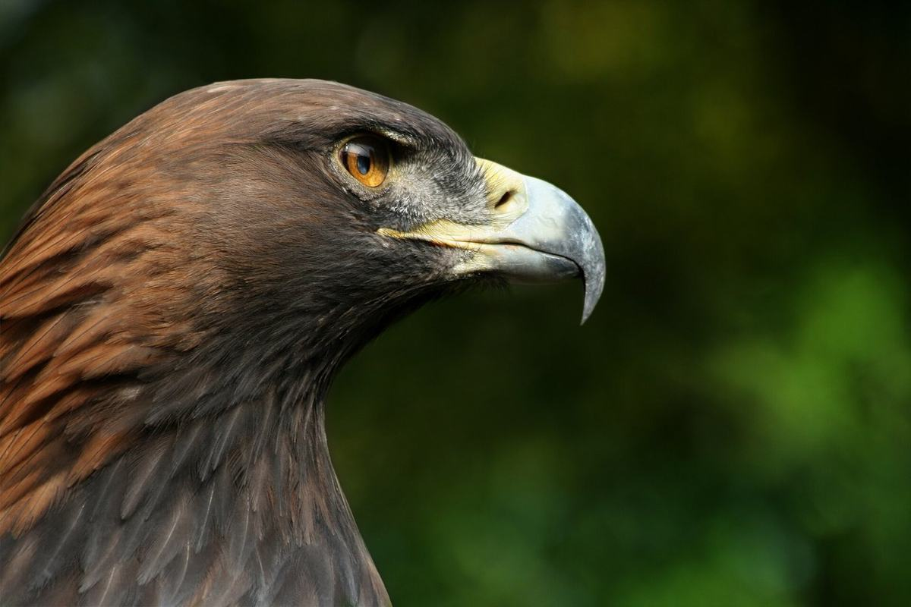
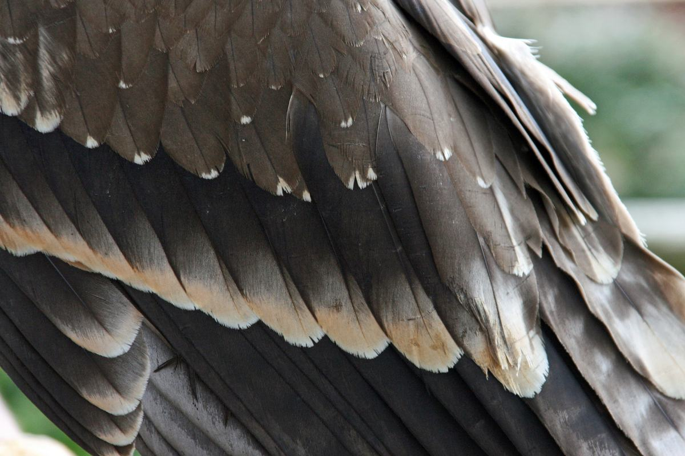
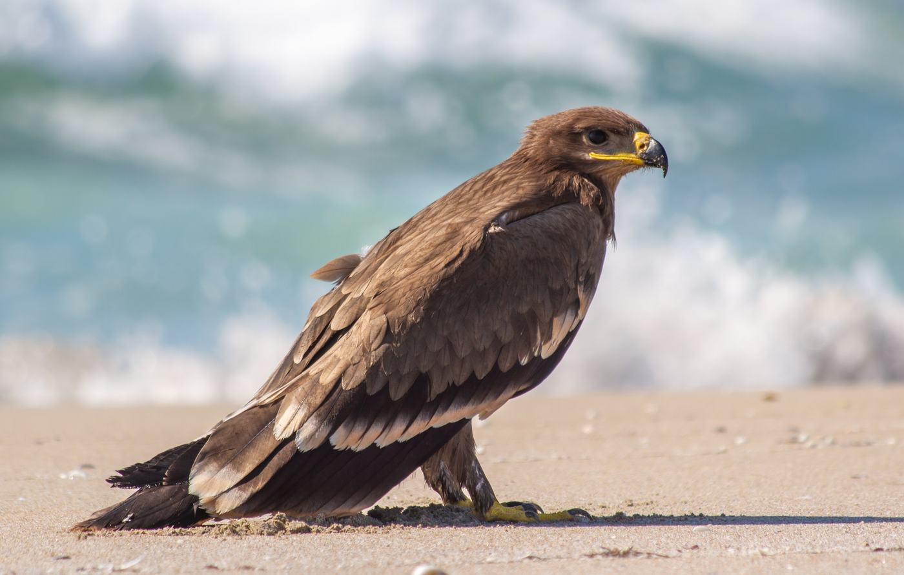
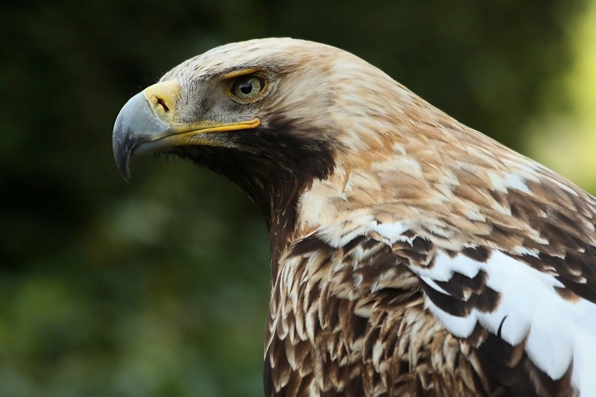
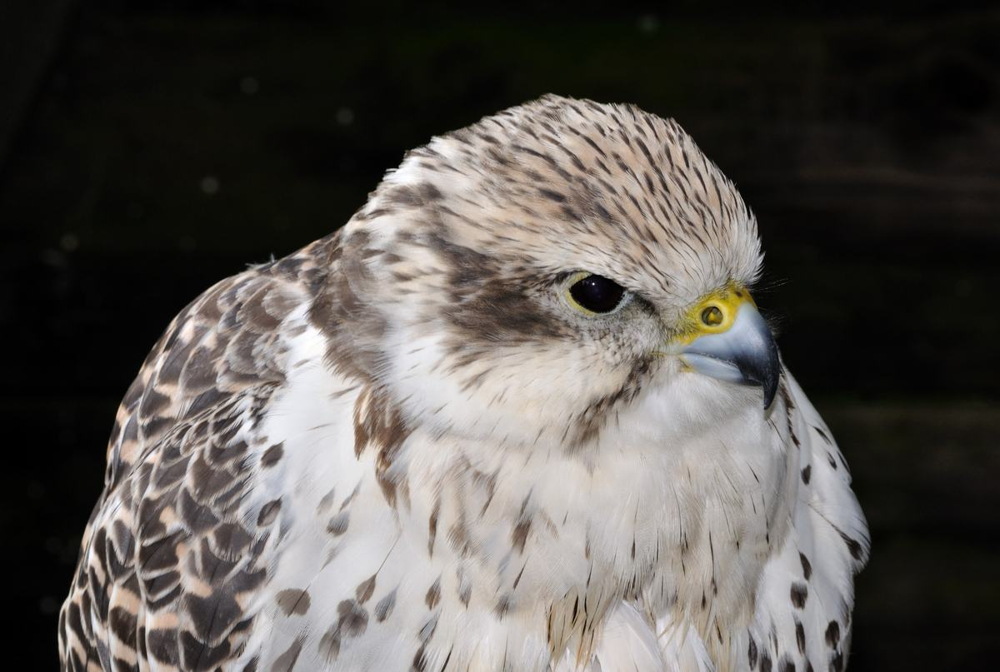
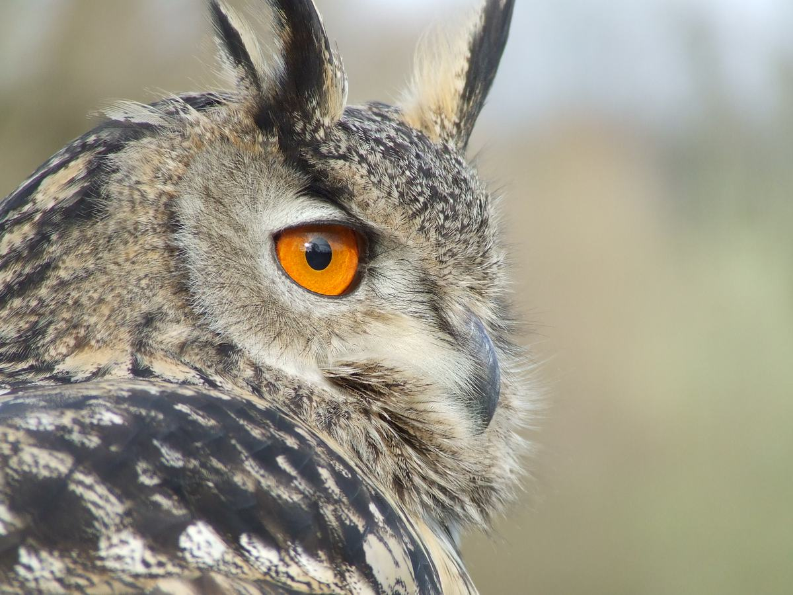
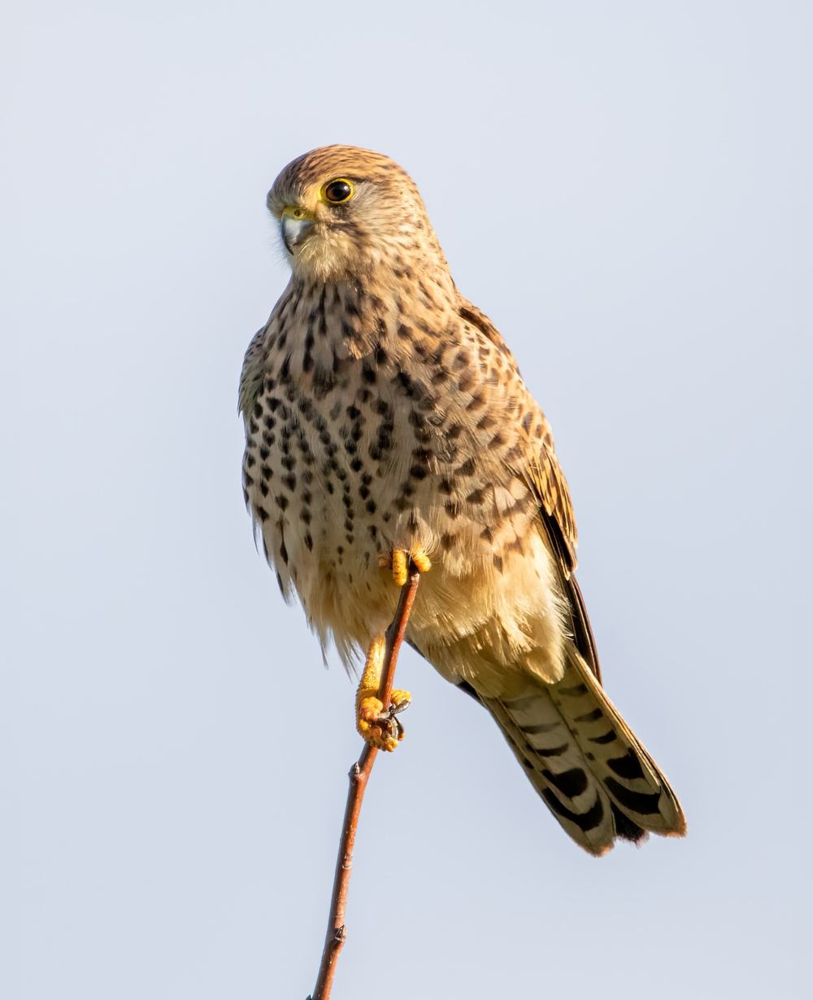

Golden eagle
бүркіт · Aquila chrysaetos
The bird on the flag and on the hunter’s arm. Comes to us after power lines and illegal shooting. Needs the biggest aviary we have.
Home › Birds in care
The patient list
Nine of them live here for good and meet visitors on a tour. The other eleven are patients, and most of them see one human being — the vet — because a bird that gets used to people cannot be released.
November 2026
The list below is built from the centre’s own patient file, so it is the same data the vet writes into every Monday. Search a name, a species or a reason, filter by stage, sort the birds, and switch between the cards and the plain table.
Scale
People bring us “a small hawk” and it turns out to be a golden eagle with a two metre wingspan. The bars below are drawn to scale with CSS, so the picture is honest: the longest bar is the biggest bird we treat.
The scale ends at 2.4 metres. For comparison, a tall man with his arms open is about 1.8 metres, the same as the eagle owl.
Test yourself in the wingspan game
Species

бүркіт · Aquila chrysaetos
The bird on the flag and on the hunter’s arm. Comes to us after power lines and illegal shooting. Needs the biggest aviary we have.

дала қыраны · Aquila nipalensis
Endangered and still the most frequent patient. Young birds starve in their first winter and sit on the road eating carrion, where cars hit them.

қарақұс · Aquila heliaca
Nests on the forest edge and hunts over open ground, so almost every bird we get has touched a power pole.

ителгі · Falco cherrug
The most trafficked bird in Central Asia. Ours arrive from the police, usually weak, overweight and unable to fly a hundred metres.

үкі · Bubo bubo
Hunts along roads at night and loses to cars. Owls are the hardest patients: one noisy week and the bird stops eating.

күйкентай · Falco tinnunculus
Nests in village roofs, so most of our chicks are kestrels. They are raised behind a screen and released together in August.
The hard part
A broken wing near the shoulder, a lost eye, a bird that was kept as a pet for a year: these do not go back. For a wild eagle, a life in a cage is not a kindness, so about one bird in five is put to sleep on the first day. We write it in the table and we say it on the tour, because a rescue centre that only shows the good endings teaches nothing.
The nine residents are the exception: they are calm enough to live with people and they work for the rest — every school group that meets Tuman is a village that stops shooting owls.